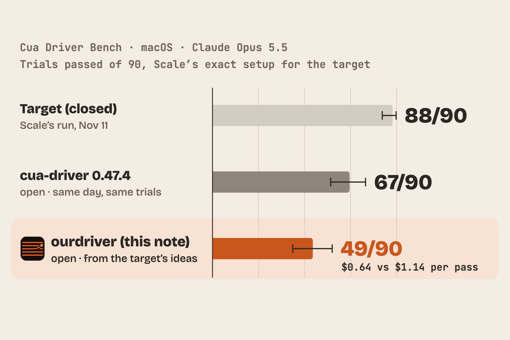
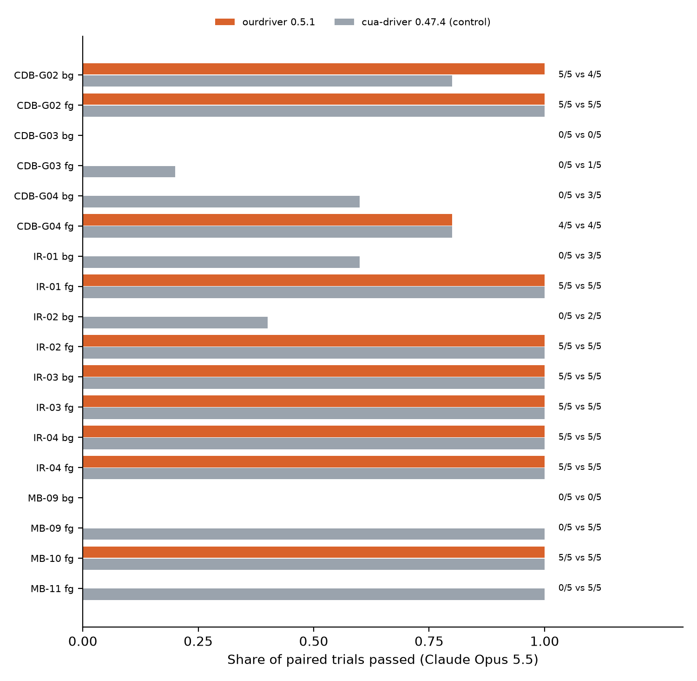
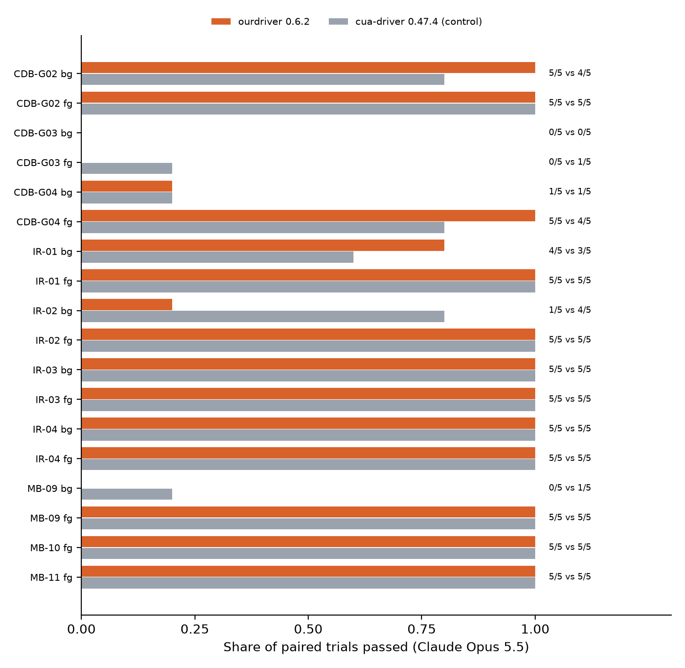
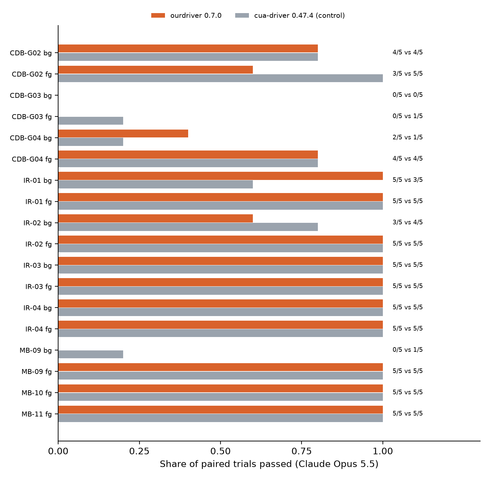

← Research·Experiments·
An open macOS driver ties cua-driver at a third of the cost
On Cua Driver Bench, with Claude Opus 5.5 on Scale’s exact setup, our open driver passed 66 of 90 trials and cua-driver 68 on the same day and the same trials (McNemar 6 vs 8 discordant pairs, p = 0.79): a statistical tie, not a win. It cost $0.42 per pass at list price against $1.13, about a third. Its first version had lost 49 to 67; this note shows both runs, why the first lost, and what the second fixed. A closed driver, here called the target, scored 88 of 90 on the same setup.
Update, Nov 15, 2026: a second frozen version (0.6.2), fixed only on development runs, passed 66 of 90 on the same trials against 68 for a fresh same-day cua-driver control (McNemar 6 vs 8 discordant pairs, p = 0.79). Neither pre-registered claim holds, beating cua-driver or being non-inferior and less disturbing, so this is a tie, not a win. The update section has the run, the fixes and where each driver still loses; the cover now shows both of our runs. A third frozen version (0.7.0), faster per action and choosing pop-up items without opening their menus, tied again on the same trials against the same control: 66 against 68 (McNemar 5 vs 7, p = 0.77), with fewer disturbed background trials (5 against 9 of 40) but no pre-registered claim.

Summary: the short answer and the key results
In short
Can an open macOS driver built from the target’s published ideas match the target’s 88 of 90 on Cua Driver Bench?
Not this one. With Claude Opus 5.5 on Scale’s exact setup, our driver passed 49 of 90 trials [0.44, 0.65], and cua-driver passed 67 of 90 [0.64, 0.83] on the same day and the same trials. Of the 20 trials where the two disagreed, cua-driver won 19 (exact McNemar p = 4×10⁻⁵). The losses have two causes. Our driver sends every click, drag and hover to the app’s process instead of moving the real pointer, which keeps the user undisturbed but can never start a drag or show a tooltip: it failed all 10 drag and tooltip trials that cua-driver passed. And choosing an item in a pop-up menu opened the menu, which takes the keyboard from whatever window the user is typing in: our driver kept the user’s keyboard focus in 25 of 40 background trials, cua-driver in 40 of 40. It was cheaper: $0.64 per pass at list price against $1.14. Update: with both causes fixed on development runs, a second frozen version passed 66 of 90 against 68 for a fresh same-day cua-driver control (p = 0.79), a tie under the pre-registered rules.
Key results
| What we tested | Result | Compared with |
|---|---|---|
| Update: our driver 0.6.2 against a fresh same-day cua-driver control, the same 90 trials | 66/90 [0.630, 0.821] against 68/90 [0.654, 0.840]; discordant pairs 6 vs 8, McNemar p = 0.79: a tie | Pre-registered rules: “beats” needs p < 0.05; “non-inferior and less disturbing” needs the paired 95% CI above −5 trials (it is −9.4 to +5.4), focus kept ≥ the control’s (38 vs 39) and fewer windows raised (9 vs 5). Neither holds |
| Update: our driver 0.7.0, same 90 trials, paired with the same control | 66/90 [0.630, 0.821] against 68/90; discordant pairs 5 vs 7, McNemar p = 0.77: a tie again | Background 24/40 against 23/40; user fully undisturbed in 35 of 40 background trials against 31 (not a pre-registered criterion). The secondary rule fails on its interval (−8.9) and on windows raised (5 vs 5) |
| Our driver with Opus 5.5, Scale’s setup for the target, 90 trials | 49/90 [0.436, 0.650]; foreground 34/50, background 15/40 | The target (Scale’s run, Nov 11): 88/90 [0.922, 0.997] |
| Against cua-driver on the same day and the same 90 trials | cua-driver is better: 67/90 [0.642, 0.831]; of 20 disagreeing pairs, 19 went to cua-driver (exact McNemar p = 4.0×10⁻⁵) | Scale’s cua-driver runs: 67/90 (0.38.0) and 62/90 (0.47.10) |
| Drag and tooltip, foreground (MB-09, MB-11) | 0/10: events posted to the app’s process start no drag and show no tooltip | cua-driver: 10/10 |
| Did the user keep keyboard focus? (40 background trials) | 25/40; the losses followed a pop-up choice, a permission sheet or Chrome | cua-driver: 40/40 |
| Does our local harness reproduce Scale’s numbers? (cua-driver 0.47.10, 18 trials) | Yes, as far as 18 trials show: 14/18; the same-day control’s 67/90 equals Scale’s 0.38.0 run | Scale’s same 18 trials: 13/18 |
| A bug the development runs found | A web page in an app dropped text written through accessibility; reading it back and typing keys fixed IR-04 (0/2 → 2/2 with Haiku; 10/10 in the final) | cua-driver: 10/10 on IR-04 |
| Cost at list price (Opus 5.5) | $31.44 for 90 trials, $0.64 per pass | cua-driver: $76.61, $1.14 per pass |
01Introduction
Ask a model to set the Priority of a reorder form to “Medium” while you keep typing in another window. A careful driver picks the item without opening the menu, and you never notice. Ours opened the menu, and for about a second your keystrokes went nowhere. In IR-02, a four-field form with one pop-up, that happened in all five background runs, and each one failed for it.
What is known. Scale ran Cua Driver Bench on its AgentEnv harness with Claude Opus 5.5. A closed driver, the target, passed 88 of 90 trials; the open cua-driver passed 67 of 90 (version 0.38.0) and 62 of 90 (0.47.10). The target’s driver is closed, but its public descriptions name the ideas behind it: read apps through the accessibility tree rather than pixels, act through accessibility before events, work in the background, give the model one JavaScript tool instead of many small ones, and report what changed after each action.
What is missing. An open driver that puts those ideas together, measured on the same harness as both published numbers, with a same-day control.
Does an open driver built from the target’s published ideas match its 88 of 90, and does it beat cua-driver on the same trials?
What this note does. Its contributions:
- An open macOS driver,
ourdriver, built in five steps on Haiku 5.5 and frozen before the final run. - A calibration showing that our copy of Scale’s harness gives cua-driver Scale’s result.
- A negative result with its causes: on 90 paired trials our driver lost to cua-driver, and the trial logs show the two mechanisms behind 18 of its 19 losses.
What counts as success
Written down before any final trial (the plan’s pre-registration):
- “Matches the target”: the 95% Clopper-Pearson interval on our passes reaches the target’s 0.978, which takes 85 or more of 90.
- “Beats the target” cannot be shown at this size: even 90/90 against 88/90 gives a one-sided Fisher p of 0.25, so any “beats” would be a point estimate.
- “Beats cua-driver”: an exact McNemar test at two-sided p < 0.05 on the paired trials (same variant, run and condition) against the same-day control.
None of the three was met. The McNemar test was significant in the other direction.
02Setup
The bench
Cua Driver Bench’s macOS track has 18 variants, each run five times with different seeds. In the 10 foreground variants the agent may take over the screen. In the 8 background variants, a sentinel app plays a user typing in their own window, and the trial passes only if the task is done and all eight of trycua’s A22 criteria hold. Those eight are: the user kept keyboard focus, no window was raised over theirs, their typing arrived intact, and the pointer, the clipboard, the Space, dialogs and the active app were all left alone. The variants are:
- three multi-app chores (CDB-G02 to G04: a schedule across mail, chat, a spreadsheet and a calendar; a case tracker checked against a manual and a web archive);
- three BenchLab micro-skills (MB-09 drag to reorder a list, MB-10 a menu, MB-11 a code that only a tooltip shows);
- four interruptions (IR-01 a permission sheet, IR-02 a banner, IR-03 an unsaved-changes sheet, IR-04 a late cookie banner on a web page).
Every trial gives the agent 45 turns and 360 seconds. Claude Code’s built-in tools are cut to Skill and Read, and AgentEnv’s own pointer tools are hidden, so the driver’s tools are the only way to act. trycua’s evaluator grades the task, and a GUI-only check fails any trial that reached outside the apps.
The driver
One tool, repl, runs JavaScript in a JavaScriptCore sandbox whose only global is computer: no file system, network or process. Through it the model reads a window’s accessibility tree, with an id for each element, and acts:
- Background first. An accessibility action when the element offers one (press, set value). Otherwise events posted to the app’s own process, never to the system’s input stream, so the app isn’t brought forward and the real pointer doesn’t move.
- What changed. Each action waits for the window to settle and prints the elements that changed, so the model rarely needs another look.
- Stable ids. An id lasts while its element is shown. A stale one is found again by role and label.
- Foreground on request.
bringToFront()andhover()exist for foreground tasks, but hover, like every other action, still goes through the app’s process.
| Step | What it adds | Haiku 5.5, 18 run-1 trials |
|---|---|---|
| 1 | The whole accessibility tree, ids that last one look, clicks and keys as real input (the app comes to the front) | 6/18 (background 0/8) |
| 2–4 | Stable ids and diffs; background input; the repl tool (checked offline, no Haiku run each) | — |
| 5 | Settle and print what changed; stale ids found again; errors that say what to do | 7/16 graded (background 2/8), 2 harness failures |
| 5.1 (frozen) | Text writes read back and typed as keys when dropped; a Chromium <select> option pressed without opening the menu | IR-04 fg and bg: 2/2 |
03How the study was run
- Goal and claim rules written down before any model call.
- Smoke run: cua-driver 0.47.10 with Opus 5.5, 2 trials, both passed.
- Calibration: cua-driver 0.47.10 with Opus 5.5, run 1 of each of the 18 variants: 14/18.
- Development on Haiku 5.5: step 1 (18 trials), step 5 (18 trials), then 4 trials after the 0.5.1 fixes.
- Freeze: driver 0.5.1; the sha256 of its source and of its binary recorded before the first final trial.
- Final run: our driver (A) and cua-driver 0.47.4 (B), 90 trials each with Opus 5.5, interleaved pair by pair, round-robin over the 18 variants, on AgentEnv 0.9.1506 with Claude Code 2.1.280: Scale’s exact setup for the target’s run.
- Update (Nov 15): three fixes developed on Haiku 5.5 and Opus 5.5 dev runs (run 1 of each variant), version 0.6.2 frozen by sha256, a second pre-registration (design, schedule, a primary and a secondary claim rule), then a fresh cua-driver control (90 trials) and our 90 trials on the same day.
| Fixed before any final trial | Changed after reading development trials |
|---|---|
Tasks, prompts, limits, grading, the claim rules, the 90-trial schedule, the model, the harness versions (AgentEnv 0.9.1506, port 3f8210e, task pack 69b459b, Claude Code 2.1.280) | The driver’s code, up to the freeze (0.5.1) |
| Logged as an amendment before any A result was read: the interleaved order, two VMs at once, a planned Fable 5.2 arm dropped, all because API access was ending that evening |
Conditions: macOS 26 VMs (Lume, 4 CPUs and 8 GB each) on one Apple-silicon Mac, two trials at a time from the third trial on. Each A trial ran beside its own B trial or a neighbouring pair’s, so both arms shared the same load. The median trial took 85 s (A) and 80 s (B). A harness failure (a VM that didn’t come up in time) was retried with the same trial id: 4 failed attempts on 3 trials, all in B, each passed on retry to a graded trial. A task failure was never retried.
04Results
Our copy of the harness gives cua-driver Scale’s result
cua-driver 0.47.10 with Opus 5.5 passed 14 of 18 run-1 trials, against 13 of the same 18 in Scale’s run. The same variants failed: G03 in both conditions, and MB-09 and G04 in the background. In the final run, the same-day cua-driver 0.47.4 passed 67 of 90, the same count as Scale’s 0.38.0 run and 5 more than its 0.47.10 run. We waived three of AgentEnv’s probe checks locally, because our VM drops an occasional click in the probe’s test window. That left no visible mark: cua-driver passed all 7 foreground BenchLab variants in all 35 of their runs.
cua-driver beat our driver on the same 90 trials
Our driver passed 49 of 90, and cua-driver 67 of 90. Paired trial by trial, they agreed on 70 and disagreed on 20, and cua-driver won 19 of those 20. With 90 pairs the test had ample power: a gap the size of the target’s over cua-driver would be found with probability above 0.99. Figure 1 shows where the difference sits.
| Arm (Opus 5.5) | Passes / 90 | 95% CI | Foreground / 50 | Background / 40 | User kept focus / 40 | $ per pass |
|---|---|---|---|---|---|---|
| ourdriver 0.5.1 | 49 | 0.436–0.650 | 34 | 15 | 25 | 0.64 |
| cua-driver 0.47.4, same day | 67 | 0.642–0.831 | 45 | 22 | 40 | 1.14 |
| The target, closed (Scale, Nov 11) | 88 | 0.922–0.997 | — | — | — | — |
| cua-driver 0.47.10 (Scale, Nov 11) | 62 | 0.581–0.784 | — | — | — | — |

Background-only input cannot drag or show a tooltip
10 of cua-driver’s 19 wins are two foreground micro-skills: MB-09 (drag items to reorder a list) and MB-11 (read a code that appears only in a tooltip). Our driver failed all 10, and cua-driver passed all 10. In MB-09 the transcript shows our drag reporting success with no change in the list, five runs out of five. In MB-11 the model hovered, waited and took screenshots, and no tooltip appeared. Both need the real pointer. AppKit starts a drag session, and shows a tooltip, from mouse events that come through the window server, and events posted to one app’s process don’t. Our driver used process events even after the model called bringToFront(), which was the moment it was allowed to take the screen.
Opening a pop-up menu takes the user’s keyboard
8 more wins are background trials where our driver did the task and the user still lost keyboard focus: IR-01 three times, G04 three times and IR-02 twice. Across all 40 background trials, the sentinel kept keyboard focus in 25 with our driver and in 40 with cua-driver. Lining up each loss with the agent’s actions (the sentinel logs focus ten times a second) shows what came just before:
- IR-02, 5 of 5:
setValueon the form’s Priority pop-up. Our driver chooses an item by opening the menu, and an open menu takes the keyboard. - IR-01: a pop-up choice (2 runs) or a press in the permission sheet’s flow (3 runs).
- G04: actions in Chrome (a
<select>whose closed options didn’t take the press, the New Tab button) and in the case tracker.
cua-driver chose the same items without the user losing focus once. The 0.5.1 fix (press a Chromium option without opening the menu) covers only web pages, and only when the press takes.
Update: after three fixes, a second frozen version ties cua-driver
The two failures above have specific causes, so we fixed them on development runs only (Haiku 5.5, then Opus 5.5 on run 1 of the 18 variants), froze version 0.6.2 (source and binary sha256 recorded before its first trial), and ran the same 90 trials again beside a fresh cua-driver 0.47.4 control on the same day. The design, the schedule and a two-level claim rule were written down before either arm ran.
- Real pointer input when the app is in front. Drags, hovers, clicks, keys and scrolls go through the window server once the task has allowed the foreground, which AppKit drags, tooltips and GTK apps such as GnuCash need.
- Screenshots include the app’s own extra windows. A tooltip is a separate window, so the old window-only screenshot never showed it; the shot now includes every window of the same app over the window’s area, and never another app’s.
- A focus guard. When a background app opens a menu or a sheet, macOS takes key focus from the user’s app. A per-process event tap on the user’s app drops that notice and releases the theft, and the user’s window is raised back if the app’s rose. The mechanism is documented in cua-driver’s source (MIT licence); ours is a port of it.
| Arm (Opus 5.5, Nov 15) | Passes / 90 | 95% CI | Foreground / 50 | Background / 40 | User kept focus / 40 | Windows raised / 40 | $ per pass |
|---|---|---|---|---|---|---|---|
| ourdriver 0.6.2 | 66 | 0.630–0.821 | 45 | 21 | 38 | 9 | 0.42 |
| cua-driver 0.47.4, same day | 68 | 0.654–0.840 | 45 | 23 | 39 | 5 | 1.13 |

--final2) from results/final2/trials.csv.The drag and tooltip skills went from 0 of 10 to 10 of 10, and the user kept keyboard focus in 38 of 40 background trials, up from 25. Of the 14 trials where the drivers disagreed, ours won 6 and cua-driver 8 (exact McNemar p = 0.79). Under the pre-registered rule, “beats cua-driver” needed more passes with p < 0.05, and the fallback, “non-inferior and less disturbing”, needed the lower end of the paired difference’s 95% interval above −5 trials (it is −9.4), keyboard focus kept at least as often (38 against 39) and fewer windows raised (9 against 5). Neither holds, so the result is a tie. The cua-driver control’s 68 matches Scale’s two published runs (67 and 62) and our first control (67), and the API was equally fast for both arms (median 2.2 against 2.5 s per turn), which the rule checked for drift.
Where ours still loses: IR-02 in the background (1 of 5 against 4 of 5), where choosing the form’s pop-up item opens its menu, and the open menu lifts the app’s window above the user’s for a moment; and G03 (0 of 10 against 1 of 10), the longest reconciliation task, where our trials run out of wall-clock time. Where it wins: one trial each on G02 and IR-01 in the background and G04 in the foreground. It costs 2.7 times less per pass, and its median trial is 60 s against 74 s.
A third frozen version ties again, and disturbs the user less often
The two losses left after 0.6.2 had clear causes. Opening a pop-up menu lifted the app’s window, and the long tasks ran out of time because every action waited up to 4 s for the window to settle. Version 0.7.0 chooses a pop-up item without opening its menu when it can, returns from each action as soon as it is delivered and waits once at the next look, and gives the model fuller general guidance (batch actions, look once, don’t sleep). We developed it on run-1 dev trials only, froze it by sha256, wrote a third pre-registration, and ran the same 90 trials, paired with the same day’s cua-driver control.
| Arm (Opus 5.5, Nov 15) | Passes / 90 | 95% CI | Foreground / 50 | Background / 40 | Undisturbed / 40 | Windows raised / 40 | $ per pass |
|---|---|---|---|---|---|---|---|
| ourdriver 0.7.0 | 66 | 0.630–0.821 | 42 | 24 | 35 | 5 | 0.43 |
| cua-driver 0.47.4, same day | 68 | 0.654–0.840 | 45 | 23 | 31 | 5 | 1.13 |

FINAL=3 … --final2) from results/final3/trials.csv.The result is another tie: 5 pairs passed only with ours and 7 only with cua-driver (p = 0.77). The secondary rule fails because the interval’s lower end is −8.9 trials and windows were raised as often as with the control (5 against 5). It does not match the target either; that needs 85 passes. What changed is the background. IR-02 went from 1 to 3 of 5, and in 35 of 40 background trials the user was not disturbed at all, against 31 for cua-driver. That measure was not pre-registered, so it is reported, not claimed. The foreground lost 3 passes, mostly on G02, where the long trials still come close to the 360 s limit.
Against the target’s 88, the missing trials are concentrated in a few places: G03 (0 of 10 against the target’s 9), background drag on MB-09 (0 of 5 against 5), G02 and G04 (6 trials), and IR-02 in the background (2). A background drag that starts the row drag without moving the user’s pointer now works in testing, but the drop does not land yet: macOS tracks a drag-and-drop session with the hardware pointer.
What the development runs fixed, and what they missed
The step-5 Haiku runs were read trial by trial from their transcripts and sentinel logs, and two bugs were fixed before the freeze.
- A web page dropped text written through accessibility. IR-04’s form is a web page inside the app (WKWebView). Writing the email field through accessibility returned success, the field still read empty, and the form went out without an email. The fix reads every text write back, and when the text isn’t there, gives the page the caret through accessibility and types the text as keys sent to the app’s process. IR-04 then passed 2 of 2 with Haiku and 10 of 10 in the final run.
- An open menu takes the keyboard. This was found in G04’s Chrome
<select>and fixed only for Chromium. The native pop-ups in IR-01 and IR-02 never came up in the development runs as a cause, so they weren’t fixed.
The step-5 runs used Haiku, which often failed MB-09 and MB-11 for its own reasons (step 1 also failed MB-11). So the drag and tooltip gap only showed once Opus did everything else right.
On everything else the two drivers tie
On the other 12 variants the drivers passed the same number of runs, except G02 bg, where ours passed 5 and cua-driver 4. Our driver used fewer turns on average (14.9 against 18.7 per trial) and cost less: $31.44 for 90 trials at list price, against $76.61. In Claude Code’s own cost figure, the measure Scale’s dataset reports, that is $24.12 against $50.92. The target’s published run was $25.67.
05Implications for AI safety
A driver decides what a computer-use agent can touch. Ours gives the model one JavaScript tool with no file system, network or shell, and it passed the GUI-only check in every trial that reached it. Background work is a safety property too: an agent that takes the user’s keyboard, even for a second, can send the user’s next keystrokes somewhere they didn’t mean them to go. This run shows that such disturbances hide behind ordinary actions. The model chose a menu item correctly and finished the task, and the trial failed anyway, because opening a menu is something a user would notice. A pass rate alone wouldn’t show it; the sentinel’s eight criteria do.
Recommendation: report a computer-use driver’s background trials with their eight A22 criteria, not only its pass rate, because a driver can finish the task and still take the user’s keyboard.
06What this does not show
- That the target’s ideas don’t work. This is one implementation. Its two failures are specific (process-only input in the foreground; choosing a pop-up item by opening its menu), and the target presumably handles both.
- A same-day run of the target. The target is closed, so its 88/90 is Scale’s run from Nov 11 on the same harness versions.
- The published control versions. The control is cua-driver 0.47.4, the version AgentEnv 0.9.1506 pins, not 0.38.0 or 0.47.10.
- Held-out tasks. The driver was developed on run 1 of these 18 variants, with Haiku. Runs 2 to 5 use the same tasks with other seeds. That could only have helped our driver.
- One VM per trial, as Scale ran it. We ran two VMs at once to finish before API access ended. Both arms shared the load equally, and our trials were no slower than cua-driver’s (median 85 s against 80 s), but timing-sensitive steps could behave differently on an idle machine.
- Probe waivers. Three of AgentEnv’s probe checks were waived locally for both arms. cua-driver’s foreground BenchLab trials show no effect.
07Reproduce it
You need an Apple-silicon Mac with Lume, Docker (colima) and about 150 GB free, Scale’s AgentEnv port at 3f8210e with AgentEnv 0.9.1506, and an Anthropic key. reproduce.sh builds the driver, installs it as an arm in the port, runs the interleaved schedule, archives every trial and recomputes the numbers. --dry-run prints every command. Without a key, python analyse.py rebuilds every number and figure in this note from results/trials.csv.
08What’s next
- Done in the update: real pointer input in the foreground and the focus guard; they closed the gap to cua-driver (66 against 68).
- Choose pop-up items without opening the menu. The remaining background losses (IR-02) come from the menu lifting the app’s window.
- Make each action cheaper on big trees. On the longest task our cells take 28 to 115 s, against 1 to 9 s of model time per turn, so trials end on the 360 s clock after 14 to 16 turns; the target finishes in 22 to 35.
- Background drag. The target passes MB-09 in the background; we have no honest mechanism for it yet.
09Questions and answers
What is a computer-use driver?
The program between a model and the computer. It turns the screen into something the model can read (here, the accessibility tree: every button, field and label with its role and value) and turns the model’s choices into actions (pressing a button, typing into a field).
What does “background” mean here?
The agent works while a user keeps using the computer. The driver mustn’t bring the agent’s app to the front, move the pointer, take the keyboard or touch the clipboard. The bench’s sentinel plays the user and logs every disturbance.
Why did a driver designed for background work lose on background trials?
Because a few of its actions weren’t as quiet as they looked. Choosing an item in a pop-up by opening the menu is an accessibility action, and no pointer moves, but an open menu still takes the keyboard. cua-driver never caused that loss in 40 background trials.
Does this mean open drivers can’t match the target?
No. It means this one doesn’t. The pre-registered bar was 85 of 90; it passed 49. The same-day control, an open driver, passed 67.
10Appendix
Data files
results/trials.csv: one row per final trial (180). Columns:arm,variant,conditionandrunidentify the trial;outcomeis pass, fail, fail_time or fail_turns, andpassedis 1 or 0;gradeis trycua’s evaluator andgui_onlythe GUI-only check;attemptscounts harness retries, andsecondsis the wall time of the last attempt;model,turns, the token counts andcostcome from the trial’s Claude Code transcript (list price), andreportedis Claude Code’s own cost figure;undisturbedand the eight A22 columns come from the grader’s own result for background trials;instanceis AgentEnv’s trial id.
results/summary.json: every number in this note, written by analyse.py: the totals and intervals, the McNemar test and its power, A22 per criterion, and costs.results/per_variant.csv: passes per variant and arm (Figure 1).results/final2/trials.csv,summary.jsonandper_variant.csv: the update’s run (ourdriver 0.6.2 and the same-day cua-driver control, 180 trials), with the same columns;summary.jsonalso holds the secondary rule’s numbers.results/final3/: the third run (ourdriver 0.7.0, paired with the same control), same columns and summary.results/calibration.tsv: the 18 calibration trials (cua-driver 0.47.10, Opus 5.5).results/dev_s5-haiku-dev.csvanddev_s5b-haiku-dev.csv: the step-5 and 0.5.1 development trials (Haiku 5.5), with the same columns.
Every transcript, sentinel log, app snapshot and grader result is kept locally, about 1.3 GB, and is available on request.
How to cite
@misc{lie2026opendriver,
author = {Albert Lie},
title = {An open macOS driver ties cua-driver at a third of the cost},
year = {2026},
month = nov,
url = {https://albertlieyingadrian.github.io/steerlab/experiments/cua-driver/report/}
}